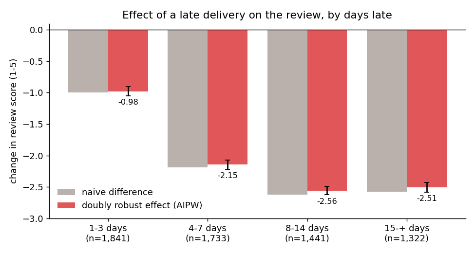
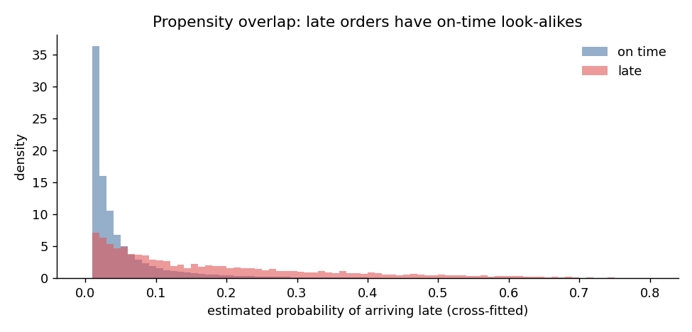
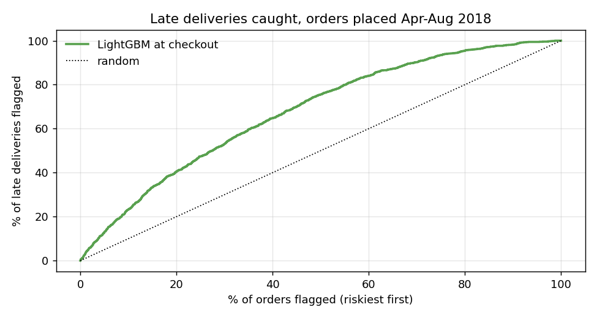

96,470 real orders from Olist, a Brazilian marketplace. Late orders get 2 points lower reviews on a 1-5 scale. The question is how much of that gap the delay itself causes, whether it can be seen coming at checkout, and whether it costs the customer too.
| Estimator | Effect on review score |
|---|---|
| Naive difference | -2.02 |
| OLS with purchase-time covariates | -1.98 |
| Inverse propensity weighting | -1.97 |
| AIPW, cross-fitted LightGBM | -1.97 (95% CI -2.02 to -1.93) |
Adjusting for distance, states, items, price, category and purchase date barely moves the estimate. A hidden confounder would need to explain 27% of the residual variance of both lateness and score to erase it; the strongest observed one explains about 1%.


Olist sends its survey when the parcel arrives or when the promised date passes. For late orders the survey usually comes first: 74% of them were reviewed before delivery, by customers who already knew. Dropping pre-delivery reviews, the obvious cleanup, would keep only a quarter of the late orders and none more than 8 days late.

Only 3% of Olist customers ever buy again. After a late first order, 2.6% returned within 180 days against 3.1% after an on-time one, but the adjusted effect (-0.4 points, 95% CI -1.0 to +0.2) and the Cox hazard ratio (0.90, CI 0.78-1.03) cannot rule out zero. Effects under about one percentage point are beyond what this data can detect.